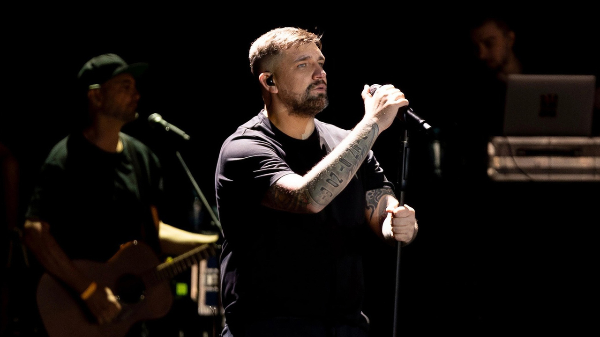
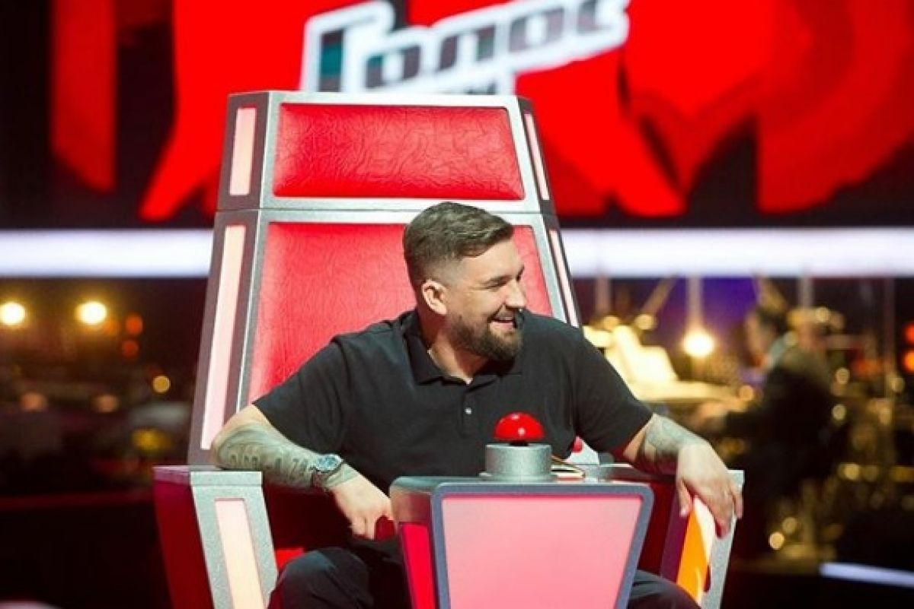
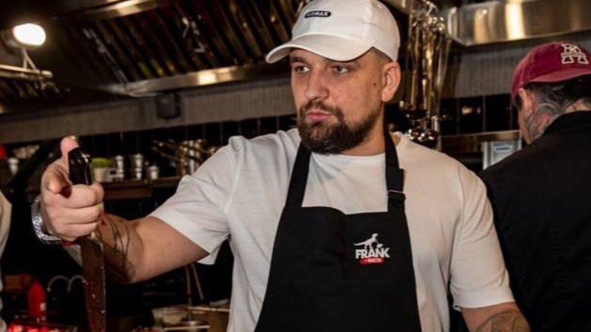
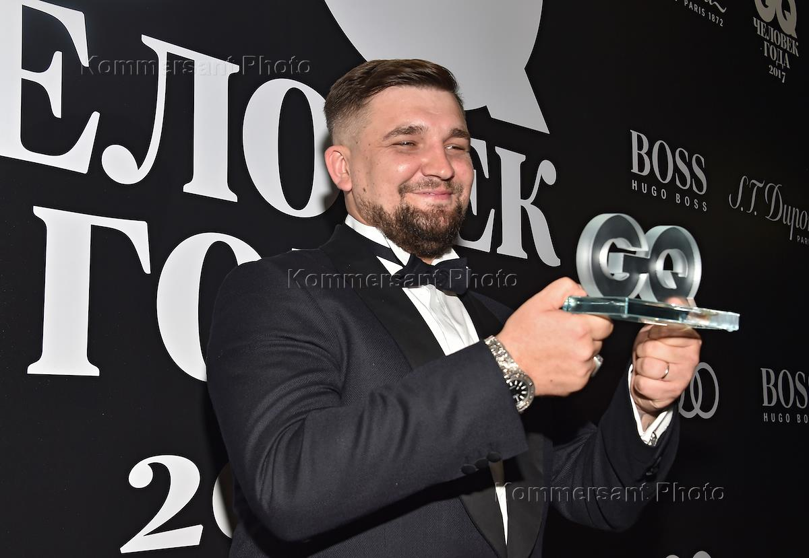

Главная | Общая информация | История | Дискография | Фильмография | Источники | Заказать | Контакты
Баста — творческий псевдоним Василия Михайловича Вакуленко, российского рэпера, певца, композитора и продюсера. Он родился 20 апреля 1980 года в Ростове-на-Дону. Интерес к музыке проявился у него ещё в детстве: он учился в музыкальной школе и рано начал писать собственные песни. Одним из первых важных этапов его карьеры стало участие в Ростовской рэп-группе "Психолирик", позже получившей название "Каста". Со временем он выработал собственный стиль и начал развивать сольное творчество. Настоящим прорывом стал выход альбома «Баста 1» в 2006 году. Позже артист выпустил множество успешных альбомов и стал известен благодаря разнообразию музыкальных стилей. Его песни часто рассказывают о повседневной жизни, чувствах, взрослении и отношениях между людьми.

Баста получил широкую известность не только как музыкант, но и как телеведущий и наставник. Он участвовал в нескольких сезонах музыкального шоу «Голос» на Первом канале, где помогал начинающим певцам раскрывать свои способности. Артист также проявил себя в кинематографе. Он участвовал в создании фильма «Клубаре» (2018), в котором выступил режиссёром и сыграл одну из ролей. Кроме того, Баста появлялся в документальных и развлекательных проектах, посвящённых музыке и культуре.

Баста активно занимается предпринимательством и развитием музыкальной индустрии. Он связан с творческим объединением Gazgolder, которое поддерживает музыкантов, выпускает музыку и организует культурные мероприятия. Помимо этого, артист развивает проекты в сфере ресторанного бизнеса и развлечений. Баста также участвует в благотворительных инициативах и поддерживает различные общественные проекты. Его деятельность помогает популяризировать современную музыку и открывает возможности для молодых исполнителей.

Баста женат на Елене Пинской. Они познакомились в середине 2000-х годов, а в 2009 году поженились. У супругов две дочери — Мария и Василиса. Несмотря на популярность, артист старается уделять внимание семье и проводить свободное время с близкими. В интервью Баста неоднократно подчёркивал важность семейных ценностей и ответственности перед родными. Семья занимает значительное место в его жизни и нередко становится источником вдохновения для творчества.
За годы музыкальной деятельности Баста добился значительного успеха и стал одним из известных представителей российской рэп-сцены. Его альбомы и песни пользуются популярностью, а концерты собирают многочисленную аудиторию. Артист неоднократно получал музыкальные премии и участвовал в крупных концертных и телевизионных проектах. Среди его достижений — успешная сольная карьера, развитие собственного музыкального объединения и популяризация рэпа среди широкой аудитории. Баста продолжает выпускать музыку и выступать, сохраняя интерес слушателей разных поколений.

© Все права защищены. Мякишева А.Г. ЭФЦ331-1 2026